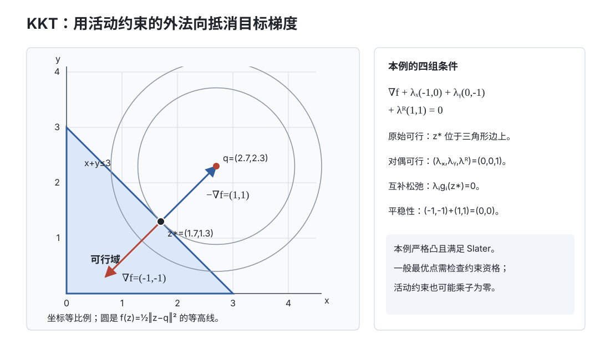

优化 III · 对偶与 KKT 条件
约束优化的两大支柱：Lagrange 对偶（把任何难题映成一个凹的伴生问题，给出下界与影子价格）与 KKT 条件（约束问题的"导数为零"）。数分 V 的 Lagrange 乘数法在这里补全不等式约束的另一半；ai 课 02 讲 SVM 对偶推导的每一步在此都有出处。

1. 问题形式与 Lagrange 函数
标准形：
Lagrange 函数（给每条约束配一个"价格"）：
关键观察：\(\max_{\lambda \geq 0, \nu} L = \begin{cases} f(x) & x \text{ 可行} \\ +\infty & \text{违反约束} \end{cases}\)——原问题 \(= \min_x \max_{\lambda,\nu} L\)（违约会被价格机制罚到无穷；ai 课 02 讲 SVM 推导开头的那句话在此验明）。
2. 对偶问题
对偶函数：\(d(\lambda, \nu) = \min_x L(x, \lambda, \nu)\)。
性质一（凹性，无条件成立）：\(d\) 是 \((\lambda,\nu)\) 的仿射函数族的逐点下确界 ⇒ 恒为凹函数（优化 I 保凸运算）——哪怕原问题极度非凸，对偶问题永远是凸优化。
性质二（弱对偶，无条件成立）：对任意可行 \(x\) 与 \(\lambda \geq 0\)：
一行证明：\(d(\lambda,\nu) = \min_z L \leq L(x,\lambda,\nu) = f + \underbrace{\textstyle\sum\lambda_i g_i}_{\leq 0} + \underbrace{\textstyle\sum \nu_j h_j}_{=0} \leq f(x)\)。——对偶给原问题免费下界（分支定界、验证解质量都靠它）。
强对偶 \(d^* = p^*\)（对偶间隙为零）：一般不成立；Slater 条件（凸问题 + 存在严格可行点 \(g_i(x) < 0\)）时成立——凸优化世界里强对偶基本是标配（LP 更宽松：只要两侧可行即强对偶，优化 IV）。
影子价格解读：最优 \(\lambda_i^*\) = 第 \(i\) 条约束放松一单位时最优值的改善率 \(-\frac{\partial p^*}{\partial b_i}\)——"这条约束值多少钱"。\(\lambda_i^* = 0\) 意味着该约束不稀缺（未绷紧）。
3. KKT 条件（本页顶点）
定理（KKT） 强对偶成立时，\(x^*\) 与 \((\lambda^*, \nu^*)\) 分别为原/对偶最优解 \(\iff\) 四组条件：
（凸问题 + Slater 下是充要条件；非凸时仅为必要条件——KKT 点是"约束版驻点"。）
逐条读：①是数分 V Lagrange 乘数法的推广（目标梯度被约束梯度的锥组合抵消）；④是灵魂——每条不等式约束"要么绷紧（\(g_i = 0\)），要么免费（\(\lambda_i = 0\)）"，二者必居其一。价格机制的读法：不稀缺的资源价格为零。
🔗 AI 衔接对账：SVM 的支持向量（ai 课 02 讲）正是互补松弛的产物——间隔外侧的点 \(g_i < 0\) ⇒ \(\alpha_i = 0\)（对模型零贡献），\(\alpha_i > 0\) 的点必在边界上；岭回归/Lasso 的"约束形式 \(\|w\| \leq t\) 与惩罚形式 \(+\lambda\|w\|\) 等价"正是 Lagrange 对偶的观点（ai 课 01 讲的正则化滑块 \(\lambda\) 就是乘子）。
4. 求解套路与例题
KKT 手算流程：按互补松弛对"哪些约束绷紧"分类讨论 → 每种情形解平稳性方程 → 验可行性与 \(\lambda \geq 0\) → 比较候选点。
例 1（完整 KKT 流程） \(\min x_1^2 + x_2^2\) s.t. \(x_1 + x_2 \geq 4\)（即 \(g = 4 - x_1 - x_2 \leq 0\)）。 解：\(L = x_1^2 + x_2^2 + \lambda(4 - x_1 - x_2)\)。平稳性：\(2x_1 = \lambda,\ 2x_2 = \lambda\) ⇒ \(x_1 = x_2\)。情形 A（约束不绷紧 \(\lambda = 0\)）：\(x = (0,0)\) 违反可行性，弃。情形 B（绷紧 \(x_1 + x_2 = 4\)）：\(x^* = (2,2),\ \lambda^* = 4 \geq 0\) ✓。最优值 8。（几何：原点到直线的投影——最近点问题的 KKT 面目。）
例 2（对偶推导演练） 对例 1 构造对偶：\(d(\lambda) = \min_x L = -\frac{\lambda^2}{2} + 4\lambda\)（对 \(x\) 配方），\(\max_{\lambda \geq 0} d\) 得 \(\lambda^* = 4\)，\(d^* = 8 = p^*\)——强对偶亲手验证一次（凸 + Slater 显然）。
例 3（水填充，信息论名例） \(\max \sum_i \ln(x_i + a_i)\) s.t. \(\sum x_i = 1,\ x_i \geq 0\)（功率分配）。KKT 给出 \(x_i^* = \max(0,\ \tfrac{1}{\nu} - a_i)\)——"水位 \(\frac1\nu\) 漫过各信道的地面 \(a_i\)"，互补松弛决定哪些信道分不到水。\(\blacksquare\)
5. 收束：对偶的思维价值
对偶不只是技巧，是一种换视角：原问题问"怎么分配变量"，对偶问题问"每条约束值多少钱"。同一个最优解，两套语言互为镜像（互补松弛是镜面）。这个视角在经济学（影子价格）、组合优化（最大流-最小割）、机器学习（SVM 核技巧恰在对偶形式中才可行）反复变现——遇到难优化问题，先写对偶看看是受用终身的动作。
下一页：约束优化最重要的特例——线性规划：单纯形法、LP 对偶，以及动态规划一瞥。